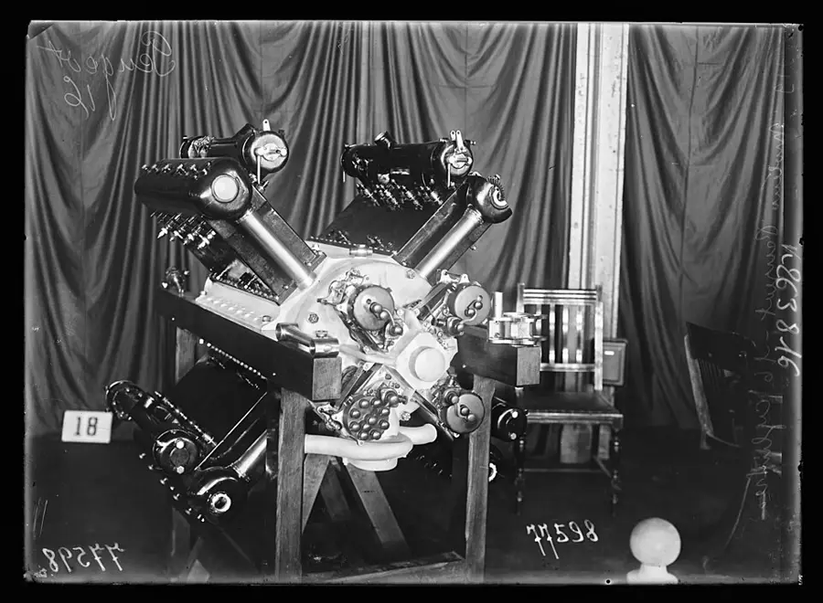

대표 로고대표 브랜드 마크
대표 로고대표 브랜드 마크푸조 Peugeot
푸조(Peugeot)는 프랑스에 기반을 둔 자동차 제조 업체이다. 1810년 커피 분쇄기, 우산 등을 제조하는 철강 업체로 출발했으며 본사는 푸아시에 있고 현재 스텔란티스의 계열이다.
최종 업데이트
푸조는 어떤 브랜드인가
푸조는 프랑스에 기반을 둔 자동차 제조 업체이다. 1976년에 시트로엥을 흡수하여 PSA 그룹을 출범했으며, PSA가 FCA와 2021년에 합병하면서 현재는 스텔란티스의 계열이다.
승용차용 커먼레일 디젤 엔진을 많이 생산하는 회사이며, 포드와 승용 디젤 엔진의 공동 개발 협약을 맺어 푸조 및 시트로엥 이외에도 유럽에서 판매 중인 포드의 승용차에 공급했다. 현재 판매 차량으로는 208, 308, 408, 508, 2008, 3008, 5008, Rifter가 있다.
엠블럼에는 사자 문양을 사용하며, 모델명에는 '0'이 들어간 숫자 명명 규칙을 쓴다. 대한민국에는 1979년부터 1981년까지 기아에서 라이선스 생산했던 푸조 604를 통해 처음으로 소개됐다.
푸조는 어떻게 시작되고 성장했나
창업자는 아르망 푸조이며, 푸조는 1810년에 커피 분쇄기, 우산 등을 제조하는 철강 업체로 출발하였다. 이후 1882년부터 자전거를 제조하기 시작하였으며, 1889년에 3륜차 세르폴레 푸조를 만들면서 자동차 제조를 시작하였다.
1897년에 독립적으로 푸조 자동차 회사를 설립하였으며, 1976년에 시트로엥을 흡수하여 PSA 그룹을 출범했다. 1929년에는 모델명에 '0'이 들어간 세 자리 숫자를 사용한 최초의 자동차 201을 공개하였다.
푸조는 1850년부터 사자 문양을 사용하였고, 1936년부터는 방패 모양의 뱃지에 프랑시 백작이 사용하던 문장의 사자를 사용하기 시작하였다.
푸조의 브랜드 아이덴티티는 무엇인가
벨포르시의 상징적인 동물인 사자를 엠블럼에 쓰며, '0'이 들어간 숫자 모델명에서 앞자리는 크기, 뒷자리는 세대를 뜻하는 명명 규칙을 가진 프랑스 자동차 브랜드이다.
푸조의 대표 제품과 서비스는 무엇인가
현재 시판 차량으로는 208, 308, 408, 508, 2008, 3008, 5008, Rifter가 있다. 모델명에서 0 앞의 숫자는 차의 크기를, 0 뒤의 숫자는 세대를 의미하며, 이 규칙은 현재 푸조의 모든 모델에 사용된다.
1007 등장 이후 '0'을 두 번 붙여 SUV 혹은 CUV 등의 차량에 대한 명명 규칙이 추가되었다. 승용차용 커먼레일 디젤 엔진을 많이 생산하며, 포드와 공동 개발 협약을 맺어 푸조 및 시트로엥 이외에도 유럽에서 판매 중인 포드의 승용차에 공급했다.
대한민국에는 사미 나세리가 주연을 맡은 프랑스의 영화 택시 시리즈에 나온 406 모델로 잘 알려져 있다.
푸조는 지금 어떤 상태인가
푸조는 PSA 그룹의 계열사였다가 PSA가 FCA와 2021년에 합병하여 현재는 스텔란티스의 계열이다. 2014년에 재정난을 겪으면서 프랑스 정부와 중국의 둥펑 자동차에 각각 지분의 14%씩을 매각했다.
대한민국에서는 2003년에 한불모터스와 딜러 계약을 맺고 판매를 재개했으며, PSA가 스텔란티스로 넘어간 후 2022년부터 스텔란티스코리아가 직판을 맡고 있다.
푸조 로고는 어떻게 변해왔나
대표 로고대표 브랜드 마크사진으로 보는 푸조의 역사

자주 묻는 질문
푸조는 어느 나라 브랜드인가요?
푸조는 프랑스의 모빌리티 브랜드입니다.
푸조는 언제 설립되었나요?
푸조는 1810년 설립되었습니다.
푸조의 브랜드 아이덴티티는 무엇인가요?
벨포르시의 상징적인 동물인 사자를 엠블럼에 쓰며, '0'이 들어간 숫자 모델명에서 앞자리는 크기, 뒷자리는 세대를 뜻하는 명명 규칙을 가진 프랑스 자동차 브랜드이다.
푸조의 대표 제품은 무엇인가요?
현재 시판 차량으로는 208, 308, 408, 508, 2008, 3008, 5008, Rifter가 있다.
푸조는 현재 어떤 상태인가요?
푸조는 PSA 그룹의 계열사였다가 PSA가 FCA와 2021년에 합병하여 현재는 스텔란티스의 계열이다.
푸조의 창업자는 누구인가요?
푸조의 창업자는 아르망 푸조입니다(위키데이터 기준).
푸조의 본사는 어디에 있나요?
푸조의 본사는 푸아시에 있습니다(위키데이터 기준).
출처와 검증
푸조 관련 참고: 공식 웹사이트 · 위키데이터 Q6742 · 한국어 위키백과 · 영어 위키백과. 브랜드명은 한글과 원어를 함께 표기하되 데이터에 없는 표기는 만들지 않습니다. 기원 국가·설립연도는 검수된 정의문에서 확인된 값을 우선하고, 없을 때만 공식 웹사이트 URL이 일치하는 위키데이터 개체의 값을 씁니다. 탄생일의 월·일은 위키데이터, 위키백과 정보상자, 본문 가운데 같은 연월로 확인되는 값만 싣고, 출처끼리 다르면 싣지 않습니다. 위키데이터 값은 2026-11-11 기준입니다.